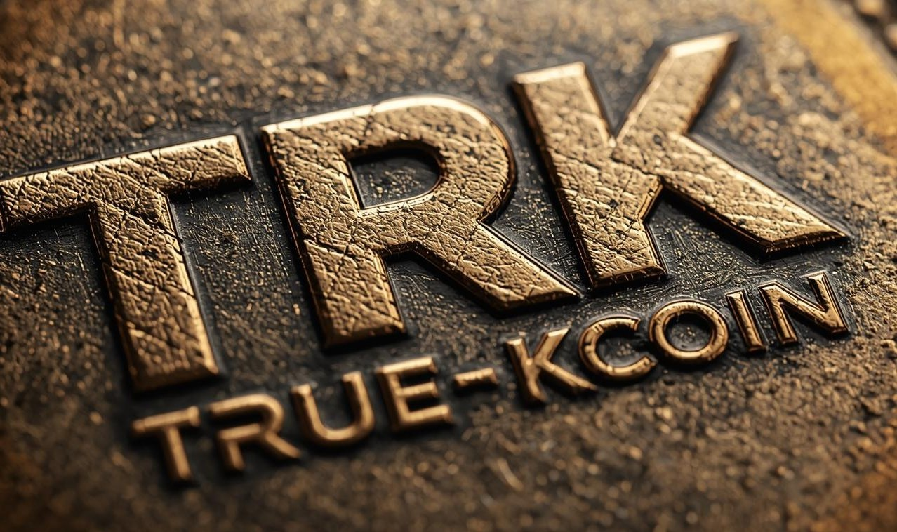

TRUEKcoin es una iniciativa que une tecnología y solidaridad. Propone una moneda simbólica inspirada en el trueque para fomentar una economía colaborativa, justa y humana, donde el valor se base en la confianza, el intercambio y el crecimiento mutuo entre las personas.